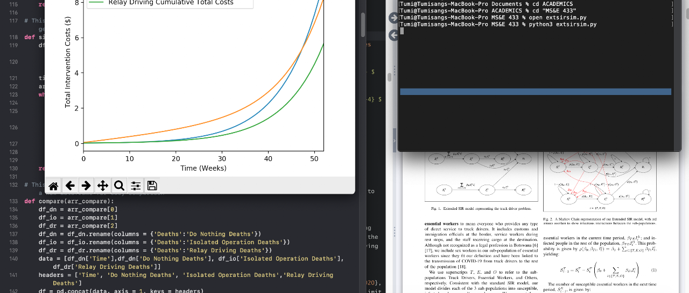

Live → Blog
August 14, 2020

I still remember when I received the email announcing Professor Ashish Goel's newly added project class on Covid-19 in Developing Countries. The premise of the class was to get a group of students who were interested in applying their "data-sciencey" skills towards epidemic and socioeconomic modeling efforts in parts of the world where there was a deficiency of modeling efforts. It sounded like something I would be interested in. One need only look at my non-traditional profile to see that my curiosity almost always leads me towards social impact oriented projects. But I was not going to apply to the class. For one I am woke and use the term "Global South" instead of "Developing Countries". Of course that was just an excuse. The true fear was my insecurity over my "data-sciencey" skills. I ended up applying in spite of that insecurity. Perhaps because my ongoing reflections in my personal life have afforded me the clarity to understand the extent to which fear informs my actions. I was accepted into the class - with my insecurity whispering in my ear that I was added on diversity grounds - and what a fulfilling journey it has been. I am not sure how useful or meaningful the work we have produced will be, but I cannot emphasize enough how enriching this journey has been. This is what my friends at Sarvodaya in Sri Lanka mean when they say, "When we build the road, the road builds us." I offer a few reflections on that journey.
A wise person I know recently said, "An individual's unique value proposition is not in what they know but who they are." As I reflect on my journey throughout this project, I see the truth of those words - at least in my case. The first lesson from the journey is that I should wear my diversity badge with honor not guilt. It is a privilege to bring this wealth of experiences to a team and project. As an example, in April when we started, neither my team nor the professor had any idea where we can be most helpful. I leveraged my connections in Botswana and other African countries to solicit project ideas. As the only student of African origin in the class, I was the unofficial leader of the Africa Team (which was later renamed the Botswana Team after finding a problem sponsor in Botswana). After spending weeks of doing smaller - but still meaningful - tasks, we learned that the Presidential Task Force on Covid-19 in Botswana was battling with a surge in cases from transnational truck drivers. The passion that I brought to the project was in part driven by my desire to make a difference more generally, but to a large extent it was rooted in my gratitude and patriotism towards my home nation. So more than the skills and knowledge I brought to the project, the value I contributed was in how I - at my core - related to the problem.
The next point is more a reminder than a new insight: I have an insatiable curiosity. I am surprised the project was completed because my curiosity kept taking me in different directions. To evaluate and compare possible intervention strategies that Botswana - and other countries in a similar position - could employ to keep essential goods flowing into the country and the virus out, we adapted some theoretical concepts on the spread of sexually transmitted infections and used them to extend the canonical SIR model. We then had to be creative in using ideas from the macroeconomics of pandemics to model the cost of implementation for the policies we considered. There is nothing more gratifying than learning new things and applying them to solve problems. I realize now why in my undergraduate program they emphasized a well rounded education. Because I have some basic training in economic analysis, epidemiological modeling, and data analysis, I was able to dive deeper into these fields and learn what I needed to understand for this project to succeed. Even then, there was still a lot that I was dying to learn. For example, to estimate most of our model parameters we struggled to find reliable and context specific data. So we had to make best guesses, but I was left wondering how we can build high fidelity models in data scarce contexts as quickly as possible. I guess it is a good thing I have decided to give in to my soul's yearning for a doctoral education.
This project demonstrated the importance of interdisciplinary collaboration and feedback mechanisms. During the spring quarter class, we met weekly and shared our work with other teams. This was often an opportunity to share best practices and expertise. In the beginning, we modeled the disease dynamics using Vensim. No one on my team had used it before, but our colleague in the larger community was more competent. Instead of wasting valuable time trying to figure out Vensim, we took him up on his offer to implement our model on Vensim. I was able to learn some Vensim when he presented the model back to us. Eventually, I decided to use Python for our simulation because that way there would be no rabbits jumping out of any hats and Python provided us with more flexibility for the type of analyses we were doing. Nonetheless, the experience revealed to me that I enjoy coming up with mathematical equations to describe a model more than I do the actual coding up of it - although I am fairly competent at programming the models and feel really smart when they work as intended. Of course at this stage in my career, I do not have the luxury to pick and choose. But these insights will come in handy when I do. I enjoyed the ability to share our models with individuals who were more knowledgeable than us in these fields and get their reactions. The feedback they gave to us strengthened our work.
My co-author and I are exploring opportunities to publish our work. It feels good to work on a project that has the slight potential to assist countries in building resilient responses to epidemics like covid-19. As I look forward to submitting my applications to do my doctoral studies in Decision Science, I am more convinced that I want to dedicate my professional endeavors towards understanding ways and methods through which we can build sustainable and resilient ecosystems. Despite deciding to pursue a doctoral education, my end goal is still industry. Based on my truth today, I do not see academia in my future. But I also know myself enough to know that changing my mind is never out of the question.
← Return to Blog